SM-01 — Probability Foundations & Ensembles
Statistical Mechanics trunk · SM/SM-01_probability_ensembles · open in the Teaching Network
Statistical mechanics is built on counting microstates. A macrostate's multiplicity Ω is the number of microstates that realize it; the fundamental postulate (equal a priori probabilities) makes every microstate equally likely, so a macrostate's probability is Ω/Ω_total. The Boltzmann entropy S = k ln Ω turns the multiplication of multiplicities into the addition of entropies, and for large N the macrostate distribution is so sharply peaked (fractional width ~ 1/√N) that thermodynamics looks deterministic.
The two-state paramagnet is literally a binomial distribution, so this module consumes ~MA-19: two_state_probability is MA-19's binomial_pmf at p = ½, and the de Moivre–Laplace Gaussian limit is its normal_pdf.
Key equations
Figures
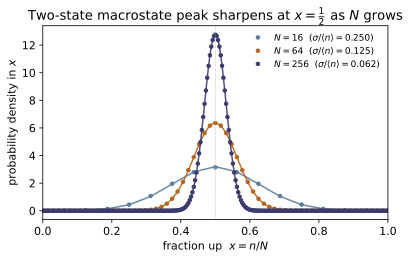
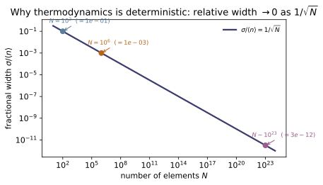
Example problems
For N spins in a field, the macrostate with n up has multiplicity Ω = C(N,n). Show Ω is maximal at n = N/2 and that Ω(N, N/2) ≈ 2ᴺ√(2/πN) (use Stirling). Check: multiplicity_two_state(100,50) ≈ 1.01×10²⁹, larger than any other n.
$\Omega(N,n)=\binom{N}{n}=\dfrac{N!}{n!\,(N-n)!}$. Comparing neighbours,
which is $>1$ for $n<(N-1)/2$ and $<1$ beyond it, so $\Omega$ climbs to a single maximum at $n=N/2$. Stirling ($\ln m!\approx m\ln m-m+\tfrac12\ln 2\pi m$) applied to $\ln\binom{N}{N/2}=\ln N!-2\ln(N/2)!$ gives $\ln\Omega(N,\tfrac N2)\approx N\ln 2-\tfrac12\ln(\pi N/2)$, i.e.
For $N=100$: $2^{100}\sqrt{2/100\pi}=1.27\times10^{30}\times0.0798\approx1.01\times10^{29}$, matching multiplicity_two_state(100,50)$\approx1.01\times10^{29}$ — the largest over all $n$.
Two isolated systems have multiplicities Ω₁, Ω₂. Show the combined system has Ω = Ω₁Ω₂, hence S = k ln Ω = S₁ + S₂. Check: boltzmann_entropy(o1*o2, 1) == boltzmann_entropy(o1,1) + boltzmann_entropy(o2,1).
Independence means each microstate of the compound system is a pair — one microstate of system 1 together with one of system 2 — so counting the pairs multiplies the counts:
Boltzmann's $S=k\ln\Omega$ then turns the product into a sum:
The logarithm is exactly what makes entropy extensive — additive over independent subsystems, where the multiplicity is multiplicative. Numerically boltzmann_entropy(o1*o2, 1) returns $\ln(\Omega_1\Omega_2)$, equal to boltzmann_entropy(o1,1) + boltzmann_entropy(o2,1) (the demo's $79.84453=79.84453$).
Derive ln n! ≈ n ln n − n by approximating the sum Σ ln k as an integral, and find the next correction ½ln(2πn). Compare both to the exact value for n = 100. Check: stirling_ln_factorial(100) vs math.lgamma(101) (refined within 1e-4; leading term off by ~3).
Write $\ln n!=\sum_{k=1}^{n}\ln k$ and approximate the sum by an integral:
The Euler–Maclaurin correction (half the top endpoint, plus a constant) restores the subleading terms,
At $n=100$ the exact value is $\ln 100!=363.7394$ (math.lgamma(101)); the refined formula gives $363.7385$ (relative error $2.5\times10^{-6}<10^{-4}$), while the bare leading term $n\ln n-n=360.52$ is low by $\approx3.2$. Hence stirling_ln_factorial(100) agrees with math.lgamma(101) to within $10^{-4}$, the leading-only form off by $\sim3$.
For the fair two-state distribution P(N,n) = C(N,n)/2ᴺ, show the standard deviation is √N/2 and the fractional width σ/⟨n⟩ = 1/√N. How large is it at N = 10²³? Check: fractional_width(100)/fractional_width(400) == 2; fractional_width(1e6) == 1e-3.
$P(N,n)=\binom{N}{n}2^{-N}$ is the distribution of $N$ fair coins ($p=\tfrac12$) — a sum of $N$ independent Bernoulli$(\tfrac12)$ variables. Therefore
The fractional width follows:
which vanishes as $N\to\infty$: at $N=10^{23}$ it is $1/\sqrt{10^{23}}\approx3\times10^{-12}$, so the magnetization is pinned to a part in $10^{12}$ and thermodynamics looks deterministic. This gives fractional_width(100)/fractional_width(400)$=\sqrt{400/100}=2$ and fractional_width(1e6)$=10^{-3}$.
Show that near the peak the binomial P(N,n) tends to a Gaussian of mean N/2 and variance N/4. Verify it for N = 200 at n = 90, 100, 110. Check: gaussian_approx_two_state(200,n) matches two_state_probability(200,n) within 2%.
Expand $\ln P(N,n)$ about the peak $n_0=N/2$. The first derivative $\dfrac{d}{dn}\ln\binom{N}{n}=\ln\dfrac{N-n}{n}$ vanishes at $n_0$, and the second derivative there is $\dfrac{d^2}{dn^2}\ln\binom{N}{n}=-\dfrac1n-\dfrac1{N-n}=-\dfrac4N$, while the peak height is $P(n_0)\approx\sqrt{2/\pi N}$ (P1). A second-order Taylor expansion then exponentiates to
a Gaussian of mean $N/2$ and variance $N/4$ — the de Moivre–Laplace theorem. For $N=200$ ($\sigma=\sqrt{50}=7.07$): at $n=100$, binomial $0.05635$ vs Gaussian $0.05642$ ($0.13\%$); at $n=90,110$, $0.02080$ vs $0.02076$ ($0.21\%$) — all within $2\%$, so gaussian_approx_two_state(200,n) matches two_state_probability(200,n).
Run the worked code: cd SM/SM-01_probability_ensembles/code && python3 probability_ensembles.py
SM-02 — Laws of Thermodynamics
Statistical Mechanics trunk · SM/SM-02_laws_of_thermodynamics · open in the Teaching Network
The four laws and the machinery they generate. Temperature is not assumed — it emerges from entropy as 1/T = (∂S/∂U). The first law dU = T dS − P dV + µ dN is energy conservation; the second law says total entropy never decreases; the third sends S → 0 as T → 0. From U one builds the other thermodynamic potentials by Legendre transforms — enthalpy H = U + PV, Helmholtz F = U − TS, Gibbs G = U − TS + PV — each natural for a different control variable, and each pair of second derivatives gives a Maxwell relation. The Carnot engine sets the efficiency ceiling η = 1 − T_c/T_h.
Key equations
Figures

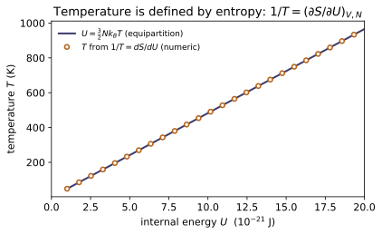
Example problems
Given S(U) = (3/2)Nk ln U + const, use 1/T = (∂S/∂U) to show U = (3/2)NkT (equipartition). Check: temperature_from_entropy(lambda U: 1.5NK_B*log(U), U) returns T with (3/2)NkT = U.
Answer: $1/T=\tfrac32 Nk/U\Rightarrow U=\tfrac32 NkT$ — temperature is the reciprocal slope of $S(U)$.
At fixed $V,N$, differentiate $S(U)=\tfrac32 Nk\ln U+\text{const}$:
Inverting gives $U=\tfrac32 NkT$ — exactly equipartition, $\tfrac12 kT$ for each of the three translational degrees of freedom. Temperature is therefore not assumed but emerges as the reciprocal slope of the entropy. For $N=1$ at $U=3\times10^{-21}\,$J this returns $T=2U/(3k)=144.86$ K with $\tfrac32 kT=U$, matching temperature_from_entropy(lambda U: 1.5NK_B*log(U), U).
Starting from U(S,V), construct H, F, G and identify the natural variables of each. Show G = H − TS = F + PV. Check: gibbs_free_energy(U,T,S,P,V) equals both enthalpy(U,P,V) − TS and helmholtz_free_energy(U,T,S) + PV.
Answer: $H=U+PV\,(S,P)$; $F=U-TS\,(T,V)$; $G=U-TS+PV\,(T,P)$; and $G=H-TS=F+PV$.
The first law $dU=T\,dS-P\,dV$ makes $(S,V)$ the natural variables of $U$. Each Legendre transform adds a conjugate product to swap one variable for the other:
Reading off the constructions, $G=(U+PV)-TS=H-TS$ and $G=(U-TS)+PV=F+PV$. Numerically at $(U,T,S,P,V)=(100,300,0.2,10^5,10^{-3})$: $H=200$, $F=40$, $G=140$, with $H-TS=200-60=140=F+PV=40+100$ — so gibbs_free_energy(U,T,S,P,V) equals both enthalpy(U,P,V) − TS and helmholtz_free_energy(U,T,S) + PV.
From dF = −S dT − P dV derive (∂S/∂V)_T = (∂P/∂T)_V, and verify both equal Nk/V for the ideal gas (S = Nk(ln V + (3/2)ln T), P = NkT/V). Check: maxwell_relation_residual(S_TV, P_TV, T, V) ≈ 0.
Answer: equality of $F$'s mixed second derivatives gives $(\partial S/\partial V)_T=(\partial P/\partial T)_V$; both equal $Nk/V$.
From $dF=-S\,dT-P\,dV$ the first derivatives are $S=-(\partial F/\partial T)_V$ and $P=-(\partial F/\partial V)_T$. Because mixed second partials of $F$ commute, $\partial^2F/\partial V\,\partial T=\partial^2F/\partial T\,\partial V$, so
For the ideal gas $S=Nk\big(\ln V+\tfrac32\ln T\big)$ gives $(\partial S/\partial V)_T=Nk/V$, and $P=NkT/V$ gives $(\partial P/\partial T)_V=Nk/V$ — identical. The two sides agree to a relative residual $\sim3\times10^{-5}$, so maxwell_relation_residual(S_TV, P_TV, T, V) $\approx 0$.
Show η_Carnot = 1 − Tc/Th, and that the same cycle run backwards has refrigerator COP = Tc/(Th−Tc) and heat-pump COP = 1 + COP_fridge. Check: carnot_efficiency(300,600) = 0.5; carnot_cop_heat_pump(270,300) = 1 + carnot_cop_refrigerator(270,300).
Answer: $\eta=1-T_c/T_h$; refrigerator $\text{COP}=T_c/(T_h-T_c)$; heat pump $T_h/(T_h-T_c)=1+\text{COP}_{\text{fridge}}$.
A reversible cycle returns to its initial state, so its total entropy change is zero and the heats obey $Q_h/T_h=Q_c/T_c$, i.e. $Q_c/Q_h=T_c/T_h$. With energy conservation $W=Q_h-Q_c$, the efficiency is
Run in reverse as a refrigerator, $\text{COP}=Q_c/W=(T_c/T_h)/(1-T_c/T_h)=T_c/(T_h-T_c)$; as a heat pump it delivers $Q_h$, so $Q_h/W=T_h/(T_h-T_c)=1+T_c/(T_h-T_c)=1+\text{COP}_{\text{fridge}}$. Thus carnot_efficiency(300,600) $=1-\tfrac{300}{600}=0.5$ and carnot_cop_heat_pump(270,300) $=\tfrac{300}{30}=10=1+9=$ 1 + carnot_cop_refrigerator(270,300).
A quantity of heat Q passes from a hot reservoir T_h to a cold one T_c. Show the total entropy change is Q(1/T_c − 1/T_h) > 0, and that it → 0 in the reversible limit T_h → T_c. Check: total_entropy_change_heat_flow(10, 500, 300) > 0 and decreases as the reservoirs approach the same temperature.
Answer: $\Delta S_{\text{total}}=Q\big(1/T_c-1/T_h\big)>0$ for $T_h>T_c$, and $\to0$ as $T_h\to T_c$.
Take both reservoirs large enough that their temperatures hold fixed, so each entropy change is $\Delta S=Q_{\text{in}}/T$. The hot reservoir loses $Q$ and the cold one gains it:
For $T_h>T_c$ the numerator is positive, so $\Delta S_{\text{total}}>0$: heat flows hot$\to$cold spontaneously, never the reverse — the second law. As $T_h\to T_c$ the gap $T_h-T_c\to0$ and the transfer becomes reversible, $\Delta S\to0$. Hence total_entropy_change_heat_flow(10, 500, 300) $=10\big(\tfrac1{300}-\tfrac1{500}\big)\approx1.33\times10^{-2}$ J/K $>0$, shrinking toward zero as the reservoir temperatures converge.
Run the worked code: cd SM/SM-02_laws_of_thermodynamics/code && python3 laws_of_thermodynamics.py
SM-03 — Classical Statistical Mechanics
Statistical Mechanics trunk · SM/SM-03_classical_statmech · open in the Teaching Network
A system in contact with a heat bath at temperature T occupies state i with the Boltzmann probability P_i = e^{−βE_i}/Z. The partition function Z = Σ_i e^{−βE_i} (β = 1/kT) is the master object: every thermodynamic quantity is a derivative of ln Z — U = −∂lnZ/∂β, F = −kT ln Z, S = (U−F)/T, and C = Var(E)/(kT²) (heat capacity = energy fluctuations, the simplest fluctuation–dissipation relation). Worked examples: the two-level Schottky anomaly, the harmonic oscillator / Einstein solid, classical equipartition, and the grand canonical ensemble.
Key equations
Figures
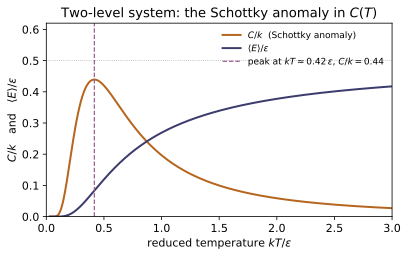
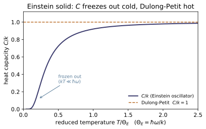
Example problems
For a three-level system {0, ε, 2ε}, write Z(T) and the occupation probabilities. Show the ground state dominates as T → 0 and all levels equalize as T → ∞. Check: boltzmann_probability([0,1e-21,2e-21], T) sums to 1 and is ordered P₀ > P₁ > P₂.
Answer: $Z=1+e^{-x}+e^{-2x}$ ($x=\varepsilon/kT$), $P_n=e^{-nx}/Z$; $P_0\to1$ as $T\to0$, all $\to\tfrac13$ as $T\to\infty$.
Writing $x\equiv\beta\varepsilon=\varepsilon/kT$, the three Boltzmann weights $e^{-\beta E_i}$ are $1,\,e^{-x},\,e^{-2x}$, so
Since $e^{-x}<1$ for every $T>0$, the weights fall with energy and $P_0>P_1>P_2$. As $T\to0$, $x\to\infty$ so $e^{-x},e^{-2x}\to0$, giving $Z\to1$ and $P_0\to1$ — the system freezes into the ground state. As $T\to\infty$, $x\to0$ so every weight $\to1$, $Z\to3$ and each $P_n\to\tfrac13$ — the levels equalize. This is exactly what boltzmann_probability([0,1e-21,2e-21], T) returns: a list summing to $1$ with $P_0>P_1>P_2$.
Show the mean energy ⟨E⟩ = Σ E_i P_i equals −∂lnZ/∂β. Check: internal_energy matches a numerical −d(lnZ)/dβ for a 4-level system.
Answer: $-\partial\ln Z/\partial\beta=Z^{-1}\sum_i E_i e^{-\beta E_i}=\sum_i E_iP_i=\langle E\rangle$.
Differentiate $\ln Z$ for $Z=\sum_i e^{-\beta E_i}$, using $\partial_\beta e^{-\beta E_i}=-E_i e^{-\beta E_i}$:
So the thermodynamic energy is literally the log-derivative of the partition function. The closed form $\sum_i E_iP_i$ computed by internal_energy therefore equals the finite-difference $-d(\ln Z)/d\beta$ for the 4-level system (e.g. $5.69\times10^{-22}$ J at $T=80$ K).
Derive C = dU/dT = Var(E)/(kT²). Check: heat_capacity(levels, T) equals the numerical dU/dT.
Answer: $C=dU/dT=\operatorname{Var}(E)/(kT^2)\ge0$ — heat capacity is an energy fluctuation.
With $U=-\partial_\beta\ln Z$ and $\beta=1/kT$ (so $d\beta/dT=-1/kT^2$), the chain rule gives
The second derivative of $\ln Z$ is the energy variance (its second cumulant), $\partial^2_\beta\ln Z=\langle E^2\rangle-\langle E\rangle^2=\operatorname{Var}(E)$, hence
A response function equals an equilibrium fluctuation — the simplest fluctuation–dissipation relation. The variance form heat_capacity(levels, T) thus reproduces the numerical $dU/dT$ (e.g. $7.79\times10^{-24}$ J/K for the 4-level system at $T=80$ K).
For a two-level system {0, ε}, find ⟨E⟩ and C(T). Show C → 0 at both T → 0 and T → ∞ and peaks in between. Check: two_level_heat_capacity(eps, T) is largest near kT ≈ 0.42 ε and small at T = 1 K and T = 10⁸ K.
Answer: $\langle E\rangle=\varepsilon/(e^{\beta\varepsilon}+1)$; $C=k(\beta\varepsilon)^2 e^{\beta\varepsilon}/(e^{\beta\varepsilon}+1)^2\to0$ at both extremes, peaking at $kT\approx0.42\,\varepsilon$.
With levels $\{0,\varepsilon\}$ and $x=\beta\varepsilon=\varepsilon/kT$, $Z=1+e^{-x}$ and only the upper level carries energy:
The variance is $\operatorname{Var}(E)=\langle E^2\rangle-\langle E\rangle^2=\varepsilon^2/(e^x+1)-\varepsilon^2/(e^x+1)^2=\varepsilon^2 e^{x}/(e^{x}+1)^2$, so
At low $T$ ($x\to\infty$) this $\sim kx^2e^{-x}\to0$ (the gap is frozen); at high $T$ ($x\to0$) it $\sim kx^2/4\to0$ (both levels equally full). So $C$ vanishes at both ends and bumps between, peaking near $x\approx2.4$, i.e. $kT\approx0.42\,\varepsilon$. Accordingly two_level_heat_capacity(eps, T) is largest near $kT\approx0.42\,\varepsilon$ ($C/k\approx0.44$ at $T\approx30$ K, with $\varepsilon/k=72.4$ K) and small at $T=1$ K and $T=10^8$ K.
For a quantum oscillator show ⟨E⟩ → ℏω/2 (zero-point) as T → 0 and ⟨E⟩ → kT (equipartition) as T → ∞, and that the Einstein heat capacity → k at high T and freezes out below ℏω/k. Check: harmonic_oscillator_energy and einstein_heat_capacity limits; equipartition_energy(3, N, T) = (3/2)NkT.
Answer: $\langle E\rangle\to\hbar\omega/2$ ($T\to0$), $\to kT$ ($T\to\infty$); $C\to k$ at high $T$, freezes below $\hbar\omega/k$; $U=\tfrac32 NkT$.
Let $y=\beta\hbar\omega=\hbar\omega/kT$, so $\langle E\rangle=\hbar\omega\big(\tfrac12+\tfrac1{e^{y}-1}\big)$. As $T\to0$, $y\to\infty$ and $1/(e^y-1)\to0$, leaving the zero-point energy $\hbar\omega/2$. As $T\to\infty$, $y\to0$ and $e^y-1\approx y$, so $1/(e^y-1)\approx kT/\hbar\omega$ and
classical equipartition. The Einstein heat capacity $C=k\,y^2 e^{y}/(e^{y}-1)^2\to k$ as $y\to0$ (Dulong–Petit) and $\sim k\,y^2 e^{-y}\to0$ for $y\gg1$ (frozen out below $\hbar\omega/k$). Each of three quadratic translational degrees of freedom adds $\tfrac12 kT$, so $U=\tfrac32 NkT$. Numerically ($\hbar\omega/k=76.4$ K): harmonic_oscillator_energy gives $\langle E\rangle/\hbar\omega=0.50$ at $T=10$ K, einstein_heat_capacity$/k\to1.0$ at high $T$ and $\sim6.5\times10^{-3}$ at $T=8$ K, and equipartition_energy(3, N, T) $=\tfrac32 NkT$.
Run the worked code: cd SM/SM-03_classical_statmech/code && python3 classical_statmech.py
SM-04 — Quantum Statistics
Statistical Mechanics trunk · SM/SM-04_quantum_statistics · open in the Teaching Network
Identical quantum particles fill single-particle states with mean occupation ⟨n⟩ = 1/(e^{β(ε−µ)} ∓ 1): the lower sign (−1) for bosons (Bose–Einstein), the upper (+1) for fermions (Fermi–Dirac). When e^{β(ε−µ)} ≫ 1 both collapse to the classical Maxwell–Boltzmann factor. Fermions obey ⟨n⟩ ≤ 1 (Pauli) and at T = 0 fill every state up to the Fermi energy. Bosons with µ = 0 are the photon gas, giving Planck's blackbody spectrum, the Wien displacement peak (ℏω_max = 2.8214 kT), and the Stefan–Boltzmann T⁴ law.
Key equations
Figures
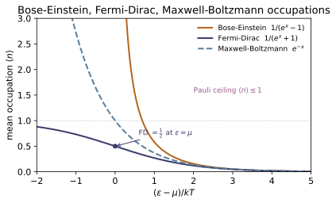
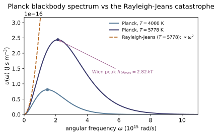
Example problems
Write ⟨n⟩ for Bose–Einstein, Fermi–Dirac, and Maxwell–Boltzmann. Show all three coincide when (ε − µ) ≫ kT, and that BE > MB > FD otherwise. Check: bose_einstein, fermi_dirac, maxwell_boltzmann agree at (ε−µ)/kT = 10.
Answer: $\langle n\rangle=\dfrac{1}{e^x\mp1}$ for BE/FD and $e^{-x}$ for MB, with $x\equiv(\varepsilon-\mu)/kT$; at $x=10$ all three equal $e^{-10}=4.540\times10^{-5}$ to one part in $10^4$.
Let $x\equiv(\varepsilon-\mu)/kT$. The three mean occupations are
For $x\gg1$, $e^x\gg1$ so the $\mp1$ is negligible beside $e^x$ and both quantum forms collapse to $1/e^x=e^{-x}$, the classical Maxwell–Boltzmann factor. For finite $x$ the denominators order as $e^x-1<e^x<e^x+1$, so the reciprocals give
bosons bunch (no exclusion), fermions are suppressed (Pauli). Tie to check: at $(\varepsilon-\mu)/kT=10$ the three functions agree to $\sim10^{-4}$, all $\approx e^{-10}=4.540\times10^{-5}$.
Show the Fermi–Dirac occupation is always in [0,1] and equals exactly ½ at ε = µ. Check: fermi_dirac(mu,mu,T) == 0.5; the value stays in [0,1] for all ε.
Answer: $\langle n\rangle_{\rm FD}=1/(e^x+1)$, $x=(\varepsilon-\mu)/kT$; since $e^x>0$ the value lies in $(0,1)$, and at $\varepsilon=\mu$ ($x=0$) it is exactly $\tfrac12$.
Write $\langle n\rangle_{\rm FD}=1/(e^x+1)$ with $x=(\varepsilon-\mu)/kT$. For every real $x$, $e^x>0$, so the denominator obeys $e^x+1>1$ and is finite, giving
The ceiling $\langle n\rangle\le1$ is the Pauli principle — at most one fermion per state. The extremes are $\langle n\rangle\to1$ for $\varepsilon\ll\mu$ ($x\to-\infty$, filled) and $\langle n\rangle\to0$ for $\varepsilon\gg\mu$ ($x\to+\infty$, empty). At the Fermi level $\varepsilon=\mu$, $x=0$ and $e^0=1$, so
Tie to check: fermi_dirac(mu,mu,T) $=0.5$, and the occupation stays in $[0,1]$ for all $\varepsilon$.
Argue that as T → 0 the FD distribution becomes a step at the Fermi energy. Check: fermi_dirac_T0(0.9eF, eF) == 1 and fermi_dirac_T0(1.1eF, eF) == 0.
Answer: As $T\to0$ the exponent $(\varepsilon-\varepsilon_F)/kT\to\mp\infty$, so $\langle n\rangle\to1$ below $\varepsilon_F$ and $\to0$ above — the Fermi function becomes the step $\Theta(\varepsilon_F-\varepsilon)$.
At $T=0$ the chemical potential is the Fermi energy, $\mu(0)=\varepsilon_F$, so $\langle n\rangle_{\rm FD}=1/\!\left(e^{(\varepsilon-\varepsilon_F)/kT}+1\right)$. Fix $\varepsilon\neq\varepsilon_F$ and let $T\to0^+$, so $1/kT\to+\infty$. If $\varepsilon<\varepsilon_F$ the exponent $\to-\infty$, $e^{(\varepsilon-\varepsilon_F)/kT}\to0$ and $\langle n\rangle\to1$; if $\varepsilon>\varepsilon_F$ the exponent $\to+\infty$ and $\langle n\rangle\to0$:
The smooth Fermi function sharpens into a step whose width $\sim kT$ shrinks to zero — every state below $\varepsilon_F$ filled, every one above empty (the Fermi sea). Tie to check: fermi_dirac_T0(0.9eF, eF) $=1$ and fermi_dirac_T0(1.1eF, eF) $=0$.
Show the Planck spectrum reduces to Rayleigh–Jeans (ω²/π²c³)kT at low ω, and that the classical law would diverge if extrapolated. Check: planck_energy_density ≈ rayleigh_jeans for ω = 10¹⁰–10¹² rad/s at T = 5778 K.
Answer: For $\hbar\omega\ll kT$, $e^{\hbar\omega/kT}-1\approx\hbar\omega/kT$, so $u(\omega)\to(\omega^2/\pi^2c^3)kT$ (Rayleigh–Jeans); lacking the exponential cutoff, $\int\omega^2\,d\omega$ would diverge — the ultraviolet catastrophe.
The Planck density is $u(\omega)=\dfrac{\hbar\omega^3}{\pi^2c^3}\dfrac{1}{e^{\hbar\omega/kT}-1}$. Put $x=\hbar\omega/kT$; at low frequency $x\ll1$, so $e^x-1=x+\tfrac{x^2}{2}+\cdots\approx x$ and $1/(e^x-1)\approx1/x=kT/\hbar\omega$. Then
the Rayleigh–Jeans law — note that $\hbar$ has cancelled. It rises as $\omega^2$ without bound, so $\int_0^\infty u\,d\omega\propto\int\omega^2\,d\omega$ diverges (the ultraviolet catastrophe). Planck's denominator $e^{\hbar\omega/kT}$ rescues it: modes with $\hbar\omega\gg kT$ are exponentially frozen out. Tie to check: planck_energy_density $\approx$ rayleigh_jeans for $\omega=10^{10}$–$10^{12}$ rad/s at $T=5778$ K (ratio $0.99993$ at $10^{11}$).
Find the peak of u(ω) by solving 3(1 − e⁻ˣ) = x, and integrate u(ω) over ω to get U/V = aT⁴. Check: wien_peak_x() ≈ 2.8214; the numerical integral of planck_energy_density equals radiation_energy_density(T); stefan_boltzmann_constant() ≈ 5.670×10⁻⁸.
Answer: $u\propto x^3/(e^x-1)$ peaks where $3(1-e^{-x})=x$, i.e. $x=\hbar\omega_{\max}/kT\approx2.8214$ (Wien); $\int_0^\infty u\,d\omega=aT^4$ with $a=\pi^2k^4/15\hbar^3c^3$, so $\sigma=ac/4=\pi^2k^4/60\hbar^3c^2\approx5.670\times10^{-8}$.
Write $u\propto x^3/(e^x-1)$ with $x=\hbar\omega/kT$. The peak is where $du/d\omega=0$:
whose nonzero root is $x=2.821439$ — Wien's displacement law, $\omega_{\max}\propto T$. For the total density substitute $x=\hbar\omega/kT$ ($d\omega=(kT/\hbar)\,dx$) and use $\int_0^\infty x^3/(e^x-1)\,dx=\pi^4/15$:
The radiated flux is $\sigma T^4$ with $\sigma=ac/4=\pi^2k^4/60\hbar^3c^2$. Tie to check: wien_peak_x() $\approx2.8214$, the numerical $\int u\,d\omega$ equals radiation_energy_density(T), and stefan_boltzmann_constant() $\approx5.670\times10^{-8}$.
Run the worked code: cd SM/SM-04_quantum_statistics/code && python3 quantum_statistics.py
SM-05 — Phase Transitions & Critical Phenomena
Statistical Mechanics trunk · SM/SM-05_phase_transitions · open in the Teaching Network
A phase transition is a non-analyticity in the free energy as a control parameter crosses a critical value. The workhorse is the Ising model. In the mean-field (Weiss) approximation each spin feels the average of its neighbors, giving the self-consistency m = tanh[(T_c/T) m + b], with T_c = qJ/k — a continuous (second-order) transition with a nonzero spontaneous magnetization below T_c and the critical exponent β = ½. The exact 1-D Ising chain has no transition at any T > 0. Landau theory expands the free energy F = a(T−T_c)m² + bm⁴, whose double well below T_c reproduces the same m ~ (T_c − T)^{1/2}.
Key equations
Figures
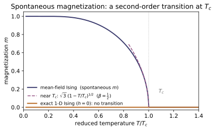
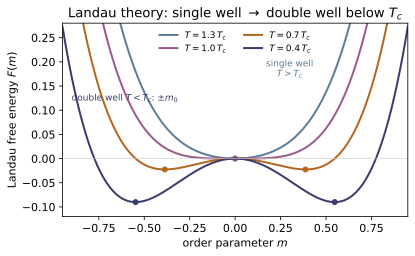
Example problems
Derive m = tanh[(T_c/T)m + b] from the mean-field energy, and show T_c = qJ/k by linearizing at small m. Check: critical_temperature(4, J) = 4J/k; mean_field_residual(spontaneous_magnetization(T,Tc), T, Tc) ≈ 0.
Answer: Replacing each neighbor by $m$ puts a spin in field $h_{\rm eff}=qJm+\mu B$, whose Boltzmann average $\tanh(\beta h_{\rm eff})$ must equal $m$: $m=\tanh[(T_c/T)m+b]$ with $T_c=qJ/k$, $b=\mu B/kT$. Linearizing fixes the onset at $T_c$.
Mean-field theory replaces each of the $q$ neighbors of a spin $s_i$ by the average $\langle s\rangle=m$, so $-J\sum_{\langle ij\rangle}s_is_j$ acting on $s_i$ becomes an effective field $h_{\rm eff}=qJm+\mu B$. A single Ising spin in that field has
Self-consistency gives $m=\tanh[(T_c/T)m+b]$ with $T_c\equiv qJ/k$ and $b\equiv\mu B/kT$. At $b=0$ and small $m$, $\tanh u\approx u$ gives $m\approx(T_c/T)m$; a nonzero branch can appear only when the slope reaches $1$, i.e. $T=T_c=qJ/k$. Tie to check: critical_temperature(4, J) $=4J/k$, and mean_field_residual at the solved $m$ is $\approx0$.
Show that m = tanh[(T_c/T)m] has only the trivial root for T > T_c but a nonzero root for T < T_c, and that m → 1 as T → 0. Check: spontaneous_magnetization(330,300)=0, spontaneous_magnetization(150,300)≈0.957, spontaneous_magnetization(5,300)>0.99.
Answer: $m=\tanh(am)$, $a=T_c/T$: for $a\le1$ ($T\ge T_c$) only $m=0$; for $a>1$ ($T<T_c$) the curve starts above the line $y=m$ and recrosses at $0<m_*<1$. As $T\to0$, $a\to\infty$ and $\tanh$ saturates, so $m\to1$.
Solve $m=\tanh(am)$, $a=T_c/T$, by intersecting the line $y=m$ with the curve $y=\tanh(am)$. Both pass through the origin, where the curve has slope $a$. For $a\le1$ ($T\ge T_c$) the curve starts no steeper than the line and, being concave for $m>0$, stays below it — so $m=0$ is the only root. For $a>1$ ($T<T_c$) the curve leaves the origin steeper than the line yet is bounded by $1$, so it must bend back and cross $y=m$ again at some
the spontaneous magnetization. As $T\to0$, $a=T_c/T\to\infty$ and $\tanh(am)\to1$ for any fixed $m>0$, forcing saturation:
Tie to check: spontaneous_magnetization(330,300) $=0$ (paramagnet), (150,300) $\approx0.957$, and (5,300) $>0.99\to1$.
Expand tanh near T_c to show m ≈ √3 (1 − T/T_c)^{1/2}, hence β = ½. Check: critical_exponent_beta(Tc, "meanfield") ≈ 0.5 (log–log slope).
Answer: With $\tanh u\approx u-u^3/3$ and $u=am$ ($a=T_c/T$), $m=\tanh(am)$ gives $m^2=3(a-1)/a^3$; as $T\to T_c^-$, $a\to1$ so $m\simeq\sqrt3\,(1-T/T_c)^{1/2}$, hence $\beta=\tfrac12$.
Near $T_c$ the magnetization is small, so expand $m=\tanh(am)$, $a=T_c/T$, using $\tanh u=u-\tfrac13u^3+\cdots$:
Just below $T_c$, $a=T_c/T\to1^+$, so $a^3\to1$ and $a-1=\dfrac{T_c-T}{T}\approx\dfrac{T_c-T}{T_c}=1-\dfrac{T}{T_c}$. Therefore
so the order-parameter exponent in $m\sim(T_c-T)^{\beta}$ is $\beta=\tfrac12$ (mean field). Tie to check: critical_exponent_beta(Tc, "meanfield") $\approx0.5$, read off as the log–log slope of $m$ vs $(T_c-T)$.
From the transfer-matrix result m = sinh(βh)/√(sinh²(βh)+e^{−4βJ}), show m = 0 at h = 0 for all T > 0 — the 1-D chain never spontaneously magnetizes. Check: ising_1d_magnetization(T, J, 0) = 0 at T = 10, 100, 500 K; nonzero with a field.
Answer: At $h=0$, $\sinh(\beta h)=0$ kills the numerator while the denominator $\to\sqrt{e^{-4\beta J}}=e^{-2\beta J}>0$ at any finite $T$; so $m=0$ for all $T>0$. Order needs $T=0$ ($\beta\to\infty$) or $h\neq0$.
The exact transfer-matrix magnetization per spin is
Switch off the field: $\sinh(\beta\cdot0)=0$, so the numerator vanishes, while the denominator becomes $\sqrt{0+e^{-4\beta J}}=e^{-2\beta J}$, strictly positive for every finite $T$ (finite $\beta$). Hence
no spontaneous magnetization — thermal fluctuations destroy long-range order in one dimension. Order sets in only as $T\to0$ ($\beta\to\infty$, $e^{-2\beta J}\to0$) or when a field $h\neq0$ makes $\sinh(\beta h)>0$. Tie to check: ising_1d_magnetization(T, J, 0) $=0$ at $T=10,100,500$ K, but nonzero once a field is applied.
Minimize F = a(T−T_c)m² + bm⁴ to find m₀ = √(a(T_c−T)/2b) for T < T_c and m₀ = 0 above, and show m₀ ~ (T_c−T)^{1/2}. Check: below T_c landau_free_energy(m0,…) < landau_free_energy(0,…); doubling (T_c−T) scales m₀ by √2.
Answer: $\partial F/\partial m=2a(T-T_c)m+4bm^3=0$ gives $m=0$ or $m_0^2=a(T_c-T)/2b$; for $T<T_c$ the nonzero root is the minimum, $m_0=\sqrt{a(T_c-T)/2b}\sim(T_c-T)^{1/2}$ ($\beta=\tfrac12$); for $T\ge T_c$ only $m=0$.
Minimize $F(m)=a(T-T_c)m^2+bm^4$ ($a,b>0$):
The roots are $m=0$ and $m^2=\dfrac{a(T_c-T)}{2b}$. For $T>T_c$ the bracket is positive for all $m$, so $m=0$ is the only extremum — a single well. For $T<T_c$ the factor $T_c-T>0$ makes a real pair appear,
the double-well minima; meanwhile $m=0$ becomes a maximum since $\partial^2F/\partial m^2\big|_0=2a(T-T_c)<0$. The exponent is again $\beta=\tfrac12$. Tie to check: below $T_c$, landau_free_energy(m0,…) $<$ landau_free_energy(0,…), and since $m_0\propto\sqrt{T_c-T}$, doubling $(T_c-T)$ scales $m_0$ by $\sqrt2$.
Run the worked code: cd SM/SM-05_phase_transitions/code && python3 phase_transitions.py
SM-06 — Non-equilibrium & Kinetic Theory
Statistical Mechanics trunk · SM/SM-06_kinetic_theory · open in the Teaching Network
Equilibrium statistical mechanics gives the Maxwell–Boltzmann speed distribution f(v) ∝ v² e^{−mv²/2kT}, with three characteristic speeds in fixed ratio, v_p < ⟨v⟩ < v_rms, and mean kinetic energy ⟨½mv²⟩ = (3/2)kT (equipartition). Collisions then set the mean free path λ = 1/(√2 nσ), the collision rate, the effusion flux, and — by random walks between collisions — the transport coefficients (diffusion). Brownian motion gives Einstein's relation D = µkT, the prototype fluctuation–dissipation theorem; the Boltzmann transport equation is the bridge to ~PK-01 and the fluid equations of ~CM-23.
Key equations
Figures
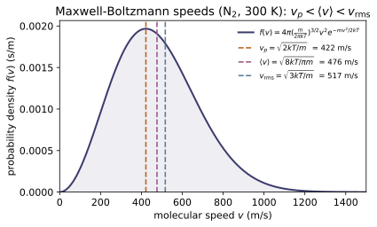
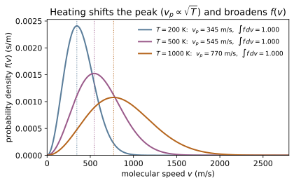
Example problems
From f(v) = 4π(m/2πkT)^{3/2} v² e^{−mv²/2kT}, find v_p (peak), ⟨v⟩ (mean), and v_rms, and show their ratio is 1 : √(4/π) : √(3/2), independent of T. Check: most_probable_speed, mean_speed, rms_speed for N₂ at 300 K give 422, 476, 517 m/s.
Answer: $v_p=\sqrt{2kT/m}$, $\langle v\rangle=\sqrt{8kT/\pi m}$, $v_\text{rms}=\sqrt{3kT/m}$; ratio $1:\sqrt{4/\pi}:\sqrt{3/2}$, independent of $T$.
Set $\alpha=\tfrac{m}{2kT}$, so $f(v)=4\pi(\alpha/\pi)^{3/2}v^2e^{-\alpha v^2}$. The peak satisfies $\frac{d}{dv}\big(v^2e^{-\alpha v^2}\big)=0$, i.e. $2v=2\alpha v^3$, giving
The mean and mean-square use $\int_0^\infty v^3e^{-\alpha v^2}\,dv=\tfrac{1}{2\alpha^2}$ and $\int_0^\infty v^4e^{-\alpha v^2}\,dv=\tfrac{3}{8}\sqrt\pi\,\alpha^{-5/2}$:
Dividing all three by $v_p$ gives $1:\sqrt{4/\pi}:\sqrt{3/2}$, with $kT/m$ cancelling so the ratio is $T$-independent. For N$_2$ ($m=4.652\times10^{-26}$ kg) at $300$ K they evaluate to $422,\,476,\,517$ m/s, matching most_probable_speed, mean_speed, rms_speed.
Show ∫₀^∞ f(v) dv = 1 and ∫ v² f dv = 3kT/m, hence ⟨½mv²⟩ = (3/2)kT (equipartition). Check: numerically integrate maxwell_speed_pdf; the moments match the closed forms and mean_kinetic_energy(T).
Answer: $\int_0^\infty f\,dv=1$ and $\langle v^2\rangle=3kT/m$, so $\langle\tfrac12 mv^2\rangle=\tfrac32 kT$ (equipartition).
With $\alpha=\tfrac{m}{2kT}$ the prefactor is $4\pi(\alpha/\pi)^{3/2}$, and the Gaussian moments are $\int_0^\infty v^2e^{-\alpha v^2}\,dv=\tfrac{\sqrt\pi}{4}\alpha^{-3/2}$ and $\int_0^\infty v^4e^{-\alpha v^2}\,dv=\tfrac{3\sqrt\pi}{8}\alpha^{-5/2}$. Normalization is then
and the second moment is
Hence $\langle\tfrac12 mv^2\rangle=\tfrac12 m\cdot\tfrac{3kT}{m}=\tfrac32 kT$ — equipartition, $\tfrac12 kT$ per translational degree of freedom. Numerically integrating maxwell_speed_pdf reproduces $\int f\,dv=1$, $\langle v^2\rangle=3kT/m$, and $\tfrac12 m\langle v^2\rangle=$ mean_kinetic_energy(T) $=6.21\times10^{-21}$ J at $300$ K.
Derive λ = 1/(√2 nσ) with σ = πd², and z = ⟨v⟩/λ. Estimate λ for air at 1 atm. Check: mean_free_path(n, 3.7e-10) ≈ 67 nm at 1 atm; collision_rate = ⟨v⟩/λ.
Answer: $\lambda=1/(\sqrt2\,n\sigma)$ with $\sigma=\pi d^2$, and $z=\langle v\rangle/\lambda$; for air at $1$ atm, $300$ K, $\lambda\approx67$ nm.
Model the molecule as a disk of cross-section $\sigma=\pi d^2$ (two centres collide when their separation reaches $d$). In time $t$ it sweeps a volume $\sigma\langle v_\text{rel}\rangle t$ and strikes $n\sigma\langle v_\text{rel}\rangle t$ partners, so
Averaging two independent Maxwellians gives $\langle v_\text{rel}\rangle=\sqrt2\,\langle v\rangle$, so $\lambda=1/(\sqrt2\,n\sigma)$ and the collision frequency $z=\langle v\rangle/\lambda =\sqrt2\,n\sigma\langle v\rangle$. At $1$ atm and $300$ K, $n=P/kT\approx2.45\times10^{25}\,\text{m}^{-3}$ and $\sigma=\pi(3.7\times10^{-10})^2$:
These reproduce mean_free_path(n, 3.7e-10) $\approx67$ nm and collision_rate $=\langle v\rangle/\lambda$.
Show the rate at which molecules pass through a small hole is Φ = ¼ n⟨v⟩, and explain why lighter gases effuse faster (Graham's law). Check: effusion_flux(n, m, T) = ¼ n mean_speed(m,T).
Answer: $\Phi=\tfrac14 n\langle v\rangle$; since $\langle v\rangle\propto m^{-1/2}$, lighter gases effuse faster ($\Phi\propto1/\sqrt m$, Graham's law).
Place the hole at $x=0$; only molecules with $v_x>0$ escape, so the flux is
with $g$ the one-dimensional Maxwellian. The integral is $\int_0^\infty v_x g\,dv_x=\sqrt{kT/2\pi m}$, and since $\langle v\rangle=\sqrt{8kT/\pi m}$ this equals $\tfrac14\langle v\rangle$, giving
Because $\langle v\rangle\propto m^{-1/2}$, at fixed $n,T$ the effusion rate scales as $1/\sqrt m$: a lighter gas effuses faster, with rate ratio $\sqrt{m_2/m_1}$ (Graham's law). This is exactly effusion_flux(n, m, T) $=\tfrac14 n\,$mean_speed(m, T).
For a Brownian particle with mobility µ, argue D = µkT, balancing diffusion against drag. Check: einstein_relation_diffusion(mu, T) = µkT and scales linearly with both µ and T.
Answer: $D=\mu kT$ — a fluctuation-dissipation relation, linear in $\mu$ and $T$.
Hold the Brownian particles in equilibrium under a weak force $F=-dU/dx$. Two currents balance: a drift current $j_\text{drift}=n\mu F$ (mobility $\mu$ set by the drift speed $v=\mu F$) and Fick diffusion $j_\text{diff}=-D\,dn/dx$. Zero net flux requires
Equilibrium also fixes the barometric law $n\propto e^{-U/kT}$, so $\frac{dn}{dx}=-\frac{1}{kT}\frac{dU}{dx}\,n=\frac{F}{kT}n$. Substituting,
Diffusion (fluctuation) is tied to mobility (the response to drag) through $T$ — a fluctuation-dissipation theorem. Thus einstein_relation_diffusion(mu, T) $=\mu kT$ is linear in both $\mu$ and $T$ (doubling $T$ doubles $D$); at $\mu=10^{11}$ s/kg, $T=300$ K it returns $4.14\times10^{-10}\,\text{m}^2/\text{s}$.
Run the worked code: cd SM/SM-06_kinetic_theory/code && python3 kinetic_theory.py